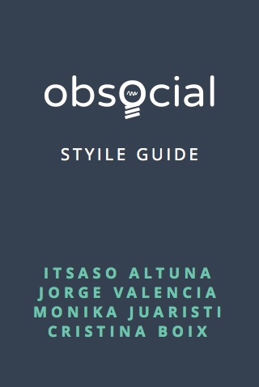
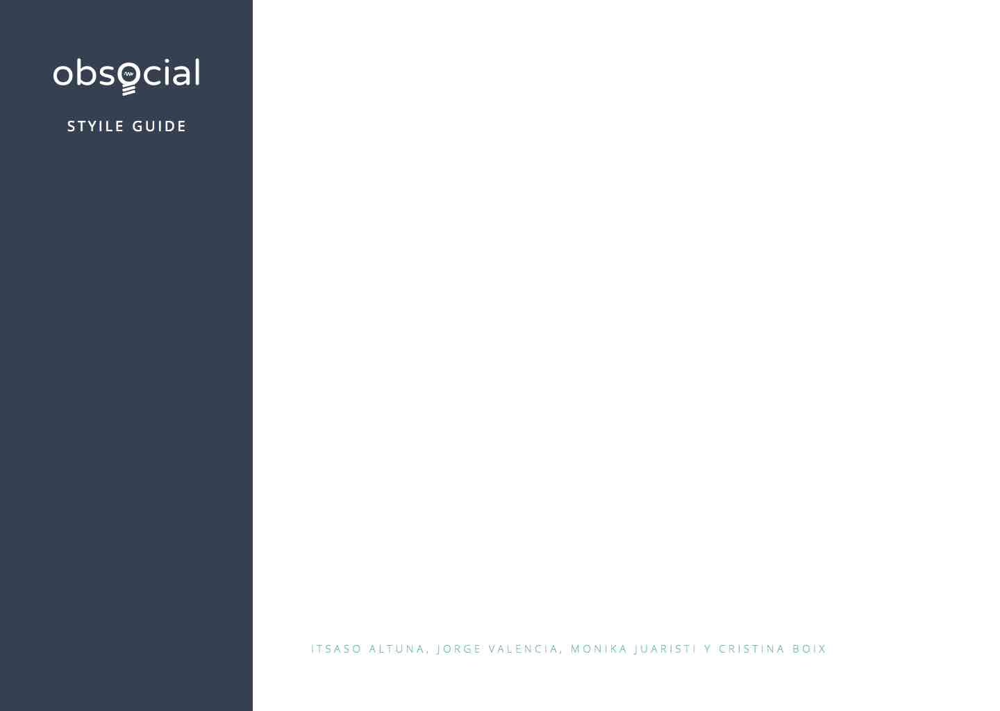
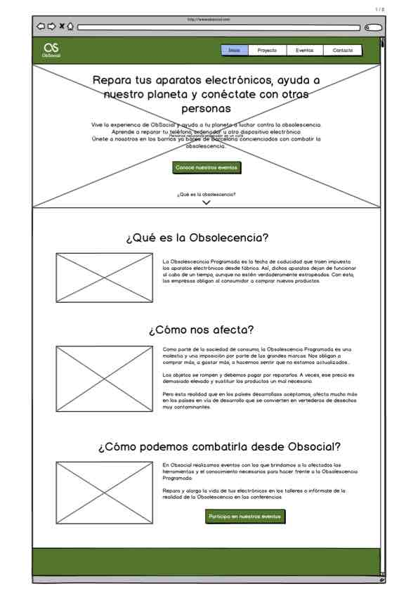

Obsocial
Memoria
Itsaso Altuna
Cristina Boix
Monika Juaristi
Jorge Valencia
Máster Diseño Web | BAU 2016
Introducción
- Historia
El primer producto que se vio directamente afectada por la obsolescencia programada fue la bombilla: En 1924 crearon el “Comité de las 1000 horas de vida” para limitar la vida útil de las bombillas. En 1932 Bernard London propuso terminar con la crisis de la Gran Depresión obligando por ley la obsolescencia programada, y aunque nunca se impuso por ley, afecta a casi todos los productos que usamos en nuestra vida cotidiana.
- Repercusiones
La contaminación es una de las peores consecuencias que acarrea la obsolescencia plani cada. A nivel mundial se producen 50 millones de toneladas de desechos electrónicos por año. Según estimaciones, cada habitante del planeta produce, en promedio, 3 a 3,5kg de chatarra tecnológica por día.
- Actualidad
Hoy en día, hay un creciente grupo de personas que han decidido enfrentar esta problemática, extendiendo la vida de sus dispositivos electrónicos por sus propios medios.
Solución
- Nuestro proyecto
Nuestro objetivo es el de conectar personas que luchan contra la obsolescencia para que ayuden combatirla y además a extender esta mentalidad.
- ¿Cual es nuestro servicio?
Es una servicio que permite conectar personas interesadas en extender la vida de sus aparatos electrónicos obsoletos.
- ¿Qué problema resolvemos?
Hay un creciente grupo de personas que quiere luchar contra la obsolescencia programada pero no sabe cómo hacerlo.
- ¿Cómo lo vamos a resolver?
Por medio de eventos donde expertos en el tema de obsolescencia explicarán a otros cómo arreglar dispositivos obsoletos, ya sean propios o para donar.
Objetivos
- Combatir la obsolesciencia programada en aparatos electrónicos.
- Concienciar al público del daño a nivel global que causa la obsolescencia.
- Impulsar a las personas a actuar contra la obsolescencia.
Investigación


Personas
Personas que utilizan dispositivos electrónicos que tienen una conciencia ecológica desarrollada.
Insights

Historias de usuario
- Feature Map
- Trello
Modelo de negocio
- Descripción de proyecto
La actividad principal de Obsocial es poner en contacto a personas que desean desprenderse de sus dispositivos electrónicos y a asociaciones sin ánimo de lucro de requieran dispositivos eletrónicos. De modo que la activdad principal de Obsocial es ser un TWO SIDED MARKET.
La actividad secundaria del proyecto consiste en dar un servicio de talleres de resparación donde los usuarios pueden acudir a reparar sus dispositivos.
- Diagrama de Canvan
- Validation Board
Diseño
- Logotipo
- Style Tiles
- Style Guide
  - Wireframes
 - Diseño de pantallas

- Primera versión de la styleguide de Obsocial online
Maquetación y desarrollo
- Diseño responsive
- Entorno de programación en Gulp
- Proyecto grupal almacenado y trabajado en GitHub para el acceso de todo el equipo
- Uso de pseudolenguaje Sass, transformado a CSS3 para la web.
- JQuery para elemetos especiales de la web que requerían algoritmos de algún tipo o para añadir fluidez en la navegación de la web y mejorar la experiencia de usuario.
- Uso de recursos externos para facilitar algunas tareas:
- Wufoo - Mensajes
- Eventbrite - Entradas
- AddThis - Compartir en RRSS
- Htas de programación de Facebook - Me gusta y Compartir en post del blog
Negocio y estrategia
- Google Analytics
Los recursos que más visitamos son el resumen genereal de Google Analytics y el flow de navegación de los usuarios.